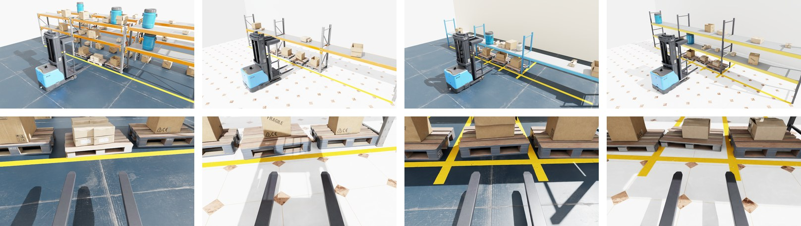

ForkSentinel
Perception-Guided Autonomous Forklift Control
and Capability Evaluation
Overview
A learned policy
for forklift pallet pickup.
ForkSentinel learns to align a forklift with a pallet, insert both forks and lift the load, from masked depth images alone. A compact visuomotor policy is distilled from a privileged teacher by behavior cloning and DAgger, then fine-tuned with PPO.
On 144 unseen procedurally generated scenes the policy reaches 98.6% strict success within 120 s, matching its teacher (99.3%). Under depth-camera noise, and with Grounded SAM 2 replacing ground-truth masks, it stays ahead of a geometric controller (58.3% vs. 41.7%).

Task
From a perturbed start pose
to a held load.
The forklift starts in front of a ground-level rack slot with a lateral offset of up to about half a metre and a yaw error of more than 10°. It must align, insert both forks into the pallet pockets, lift, and hold. One attempt per scene; no resets.
Strict success
Insertion depth: each fork lies 58–74.2 cm inside the 80.2 cm-deep pallet at the last sample before lift.
Hole error: the larger of the two fork-tip lateral errors, each measured against its own pocket centre, is at most 20 mm.
Load: the pallet and cargo stay lifted for at least 2 s with zero base motion, cargo on the pallet and nothing touching the ground.
Protocol: no collision with the rack or neighbouring loads, complete evidence, and completion within the time budget. We report two budgets, 60 s and 120 s, from the same run.
Method
Teacher, student,
and three training stages.
A teacher with access to the simulator state shows how to do the task. The student never sees that state: it learns to reproduce the teacher from what a fork-mounted depth camera can see.
Observation
Depth D is kept only on pixels of the target pallet and target cargo (mask M), downsampled to 72 × 128 and stacked over the last four 15 Hz frames, with two image-coordinate channels. The only proprioceptive input is the fork height h. Masks come from simulator labels during training and from Grounded SAM 2 in the noise evaluation.
Action
The network outputs forward speed (scaled to ±0.25 m/s), steering angle (±1 rad) and a lift logit. Once the lift trigger fires, the same scripted lift-and-hold routine as the teacher runs.
Privileged teacher
Lateral and yaw errors are measured from the true pallet pose. Insertion starts only when |elat| ≤ 2 cm and |eyaw| ≤ 7° at the approach endpoint; otherwise the teacher reverses to 2.0 m and approaches again, up to three times. Each re-approach costs about 25 s.
Stage 1 · Behavior cloning
300 strict-success demonstrations, 157,061 decision frames. The lift label is positive on the last two frames before the teacher lifts. Masks are dilated, eroded and dropped at random during training.
Stage 2 · DAgger
The student drives 60 new scenes per round while the teacher labels every visited state; the policy is retrained from scratch on all data. Five rounds add 300 episodes. The mean steering gap between student and teacher on visited states falls from 0.135 to 0.032 rad.
Stage 3 · PPO fine-tuning
Speed and steering are sampled from a Gaussian around the policy mean; lifting stays deterministic. The critic is a 256 × 256 MLP on simulator-state alignment errors, used only in training. γ = 0.998, λ = 0.95, clip 0.2, 32 scenes per iteration (half with lateral offset above 250 mm), 16 iterations, early stop at KL 0.03.
Finding 1
Offline error
did not predict closed-loop success.
A first student that also received measured steering and speed reached near-zero offline action error but failed every closed-loop trial (0/8). It had learned to repeat its previous command: forcing the measured steering to ±1 moved its output to ±0.99, and blanking the image barely changed its error.
Keeping only fork height as proprioception raised the offline steering error tenfold and closed-loop success to 26/30.
Finding 2
The teacher
sets the ceiling.
After DAgger the student succeeds on every training scene the teacher solves (224/224) and on almost none it does not (3/63). PPO fine-tuning left held-out behavior unchanged (27/30 before and after, the same three scenes failing).
The remaining failures are scenes with large initial offsets where the teacher itself needs three or more re-approaches and runs out of time. With no successful episode there, the sparse reward gives PPO nothing to climb.
Result
A stratified benchmark,
with and without sensor noise.
Earlier test sets were too easy to separate methods, and a single success rate mixed three different failures: not precise enough, not fast enough, and not feasible. The benchmark below stratifies scenes by initial error and reports two time budgets.
Scenes
12 strata × 12 scenes = 144
Four bands of initial lateral offset (0–100, 100–250, 250–400, ≥ 400 mm) × three bands of yaw (0–5°, 5–10°, ≥ 10°), half near and half far. Seeds are disjoint from all training and development scenes and taken in order, not hand-picked.
Statistics
Paired, per scene
Every method runs each scene once. Success rates carry Wilson 95% intervals; methods are compared scene by scene with an exact McNemar test.
| Method | 60 s | 120 s |
|---|---|---|
| Privileged teacher | 66.7%96/144 | 99.3%143/144 |
| Learned student | 68.1%98/144 | 98.6%142/144 |
| Geometric controller | 70.1%101/144 | 95.8%138/144 |
| Method | 60 s | 120 s |
|---|---|---|
| Learned student | 43.8%63/144 | 58.3%84/144 |
| Geometric controller | 31.2%45/144 | 41.7%60/144 |
Without noise
Student, teacher and geometry
are indistinguishable.
The student matches its teacher (McNemar p = 1.0 at 120 s) with a median hole error of 10.2 mm. The geometric controller here fits the pallet front face in depth and uses the teacher's control law; it is also statistically tied (p = 0.22). An earlier geometric controller, tuned for a single warehouse layout, solves 3 of 144 scenes.
With noise
Ahead under depth noise.
Not yet robust.
Noise levels follow a D435-class stereo model (14 mm depth noise at 2 m), 1% block dropout, 0.5° / 2.5 mm camera extrinsic error applied by physically moving the camera, ±8 mm fork mounting error and 33 ms actuation delay. Neither method was retrained. The student is ahead at both budgets (p = 0.005 and p < 0.001).
The advantage comes almost entirely from depth noise: with depth noise alone at stress level, 95.8% vs. 27.1%. Camera and fork mounting errors each cut both methods below one half, and success under nominal noise is still only 58.3%. Without noise, Grounded SAM 2 masks cost little: 96.5% (139/144).